Blake, K. R., Bastian, B., O’Dean, S. M., & Denson, T. F. (2017). High estradiol and low progesterone are associated with high assertiveness in women. Psychoneuroendocrinology, 75, 91–99. http://www.sciencedirect.com/science/article/pii/S0306453016302190
Ninety-eight women (Mage=22.19years,SD=4.43;Wave1n=60;Wave2n=38)
Using a within-subject design, we estimated ovulation for 98 women using urinary luteinizing hormone (LH) tests. We then assessed measures of assertiveness and sexual availability at fertile and non-fertile time points. For a subgroup of the sample for which hormone measures were available (n = 60), we further examined whether estradiol and progesterone at each time point were associated with assertiveness and sexual availability.
To maximize the likelihood of detecting surges in LH, we fol- lowed the standardized LH testing procedure in Blake et al. (2016b). All participants used commercially available urinary LH tests (Blue Cross Bio-Medical Co. LTD, CE/FDA Registered) and tested until a positive surge was detected. Wave 1 participants tested until a positive result was reported (a maximum of 10days) and Wave 2 tested for 11 continuous days, even if a surge was reported ear- lier. We instructed participants to test between 1000 h and 2000 h and report the result to the research team via SMS or email. The repeated design of the study required that all participants attended one fertile and one non-fertile laboratory session. Hence, all participants included here detected a LH surge and thus had ovulatory cycles. Participants who did not record a surge in LH were not eligible for inclusion in the study (see Blake et al., 2016b for full details of the sampling procedure).
Progesterone and estradiol samples were stored at −20◦C and analyzed by a professional reference laboratory in Dresden, Germany. After thawing, samples were centrifuged at 3000 rpm for five minutes, which resulted in a clear supernatant of low viscosity. Salivary progesterone and estradiol concentrations were measured using commercially available chemiluminescence-immuno-assays with high sensitivity (IBL International, Hamburg, Germany). Intra- and inter-assay coefficients of variations for both hormones were below 12%.
Note on cycle phase: Blake et al.’s files record the cycle day of each session (counted forward from the last menstrual onset) and the participant’s reported usual cycle length (LengthRep), but no observed next menstrual onset. Days counted backward from the next onset are therefore estimated as the forward day minus the reported usual cycle length. The same reported cycle length is used to exclude cycles shorter than 20 or longer than 35 days.
blake <- rio::import("https://osf.io/wsmxr/download", format = "sav")
blake_long <- rio::import("https://osf.io/2d7xp/download", format = "sav") %>% left_join(rio::import("data/blake/Saliva long - for Ruben.sav"), by = c("SUBJECT" = "Subject", "Fertility" = "fertility"))left_join: added 7 columns (Phase, Estra, Prog, notes, Exclude, …)
> rows only in x 0
> rows only in rio::import("data/blake.. ( 0)
> matched rows 120
> =====
> rows total 120n_distinct(blake$Subject)[1] 96n_distinct(blake_long$SUBJECT)[1] 60[1] 60pss2date <- function(x) as.Date(x/86400, origin = "1582-10-14")
blake <- blake %>%
mutate(date_fertile_session = pss2date(Date_F),
date_nonfertile_session = pss2date(Date_NF),
date_first = if_else(date_fertile_session < date_nonfertile_session,
date_fertile_session, date_nonfertile_session))mutate: new variable 'date_fertile_session' (Date) with 48 unique values and 38% NA
new variable 'date_nonfertile_session' (Date) with 47 unique values and 38% NA
new variable 'date_first' (Date) with 45 unique values and 38% NAqplot(blake$date_nonfertile_session, blake$date_fertile_session) + geom_abline()Warning: `qplot()` was deprecated in ggplot2 3.4.0.
This warning is displayed once per session.
Call `lifecycle::last_lifecycle_warnings()` to see where this warning
was generated.Warning: Removed 36 rows containing missing values or values outside the scale
range (`geom_point()`).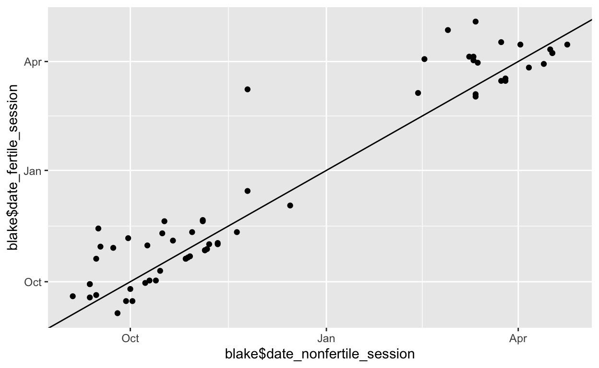
blake_long <- blake_long %>% left_join(blake %>% mutate(partner = if_else(RelStat == "single", 0, 1)) %>% select(SUBJECT = Subject, LengthRep, CycleDiff, date_fertile_session, date_nonfertile_session, date_first, age = Age, partner))mutate: new variable 'partner' (double) with 2 unique values and 0% NA
select: renamed 2 variables (SUBJECT, age) and dropped 62 variables
Joining with `by = join_by(SUBJECT)`
left_join: added 7 columns (LengthRep, CycleDiff, date_fertile_session, date_nonfertile_session, date_first, …)
> rows only in x 0
> rows only in blake %>% mutate(partne.. ( 36)
> matched rows 120
> =====
> rows total 120blake_long <- blake_long %>%
mutate(date = if_else(Fertility == 1, date_fertile_session, date_nonfertile_session),
day_rel_to_start = as.numeric(date - date_first),
# Blake et al.'s files have no observed next menstrual onset. The "backward-counted" day is
# the forward day minus the self-reported usual cycle length (LengthRep, "Length (reported)").
bc_day = Day - LengthRep - 1,
bc_day = if_else(bc_day < 0, bc_day, NA_real_)) %>%
group_by(SUBJECT) %>%
# the surge was DaysAfterPeak days before the fertile session (until 2026 this added the days,
# which put the surge after the session and shifted every LH day by twice that number)
mutate(date_lh_peak = na.omit(date - DaysAfterPeak),
lh_day = as.numeric(date - date_lh_peak),
# sessions belong to the same cycle if they share the reported menstrual onset.
# (Until 2026, the rule compared the two rows in file order, which split cycles and merged others.)
onset = date - (Day - 1),
cycle_no = dense_rank(onset),
# days relative to the LH surge only for sessions in the cycle of the surge
lh_day = if_else(cycle_no == cycle_no[Fertility == 1], lh_day, NA_real_)) %>%
ungroup()mutate: new variable 'date' (Date) with 74 unique values and 0% NA
new variable 'day_rel_to_start' (double) with 30 unique values and 0% NA
new variable 'bc_day' (double) with 29 unique values and 3% NA
group_by: one grouping variable (SUBJECT)
mutate (grouped): new variable 'date_lh_peak' (Date) with 48 unique values and 0% NA
new variable 'lh_day' (double) with 18 unique values and 22% NA
new variable 'onset' (Date) with 67 unique values and 0% NA
new variable 'cycle_no' (integer) with 2 unique values and 0% NA
ungroup: no grouping variables remain# check: the grouping by onset reproduces Blake et al.'s own cycle labels (CycleDiff = 0: same cycle)
blake_cycles <- blake_long %>% group_by(SUBJECT) %>%
summarise(one_cycle = n_distinct(cycle_no) == 1, same_cycle_blake = first(CycleDiff) == 0)group_by: one grouping variable (SUBJECT)
summarise: now 60 rows and 3 columns, ungroupedxtabs(~ one_cycle + same_cycle_blake, blake_cycles) same_cycle_blake
one_cycle FALSE TRUE
FALSE 26 0
TRUE 0 34stopifnot(all(blake_cycles$one_cycle == blake_cycles$same_cycle_blake))
qplot(Day, data = blake_long) + facet_wrap(~ Fertility)`stat_bin()` using `bins = 30`. Pick better value `binwidth`.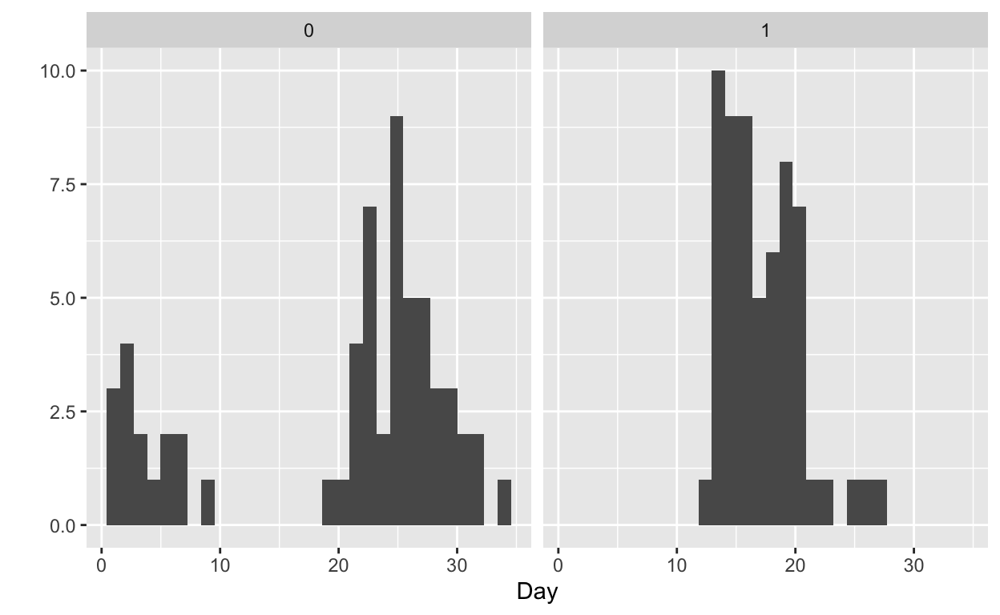
qplot(lh_day, data = blake_long,binwidth = 1) + facet_wrap(~ Fertility)Warning: Removed 26 rows containing non-finite outside the scale range
(`stat_bin()`).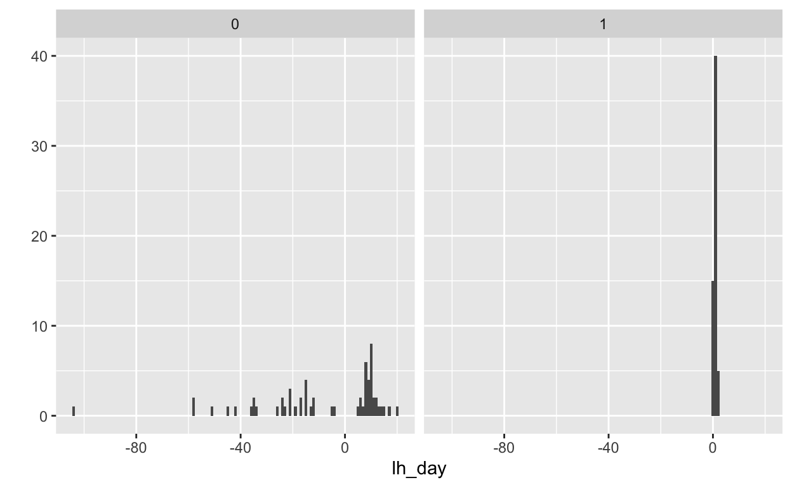
FALSE TRUE
94 26 # blake_long %>% select(SUBJECT, Session, Fertility, cycle_no, date, day_rel_to_start, date_lh_peak, lh_day, bc_day, Day, DaysAfterPeak, Estra, Progw) %>% arrange(SUBJECT, Session) %>% filter(SUBJECT <= 10) %>% View
# columns with mean are the person average or sth similar. Estra and Progw are winsorized, I now have Estra and Prog as raw values
# mean(blake_long$Zmean_estraLG,na.rm=T)
# mean(blake_long$ZEstrawLG,na.rm=T)
# mean(exp(blake_long$mean_estraLG),na.rm=T)
# mean(blake_long$Estraw,na.rm=T)
# mean(blake_long$meanE,na.rm=T)
# cor.test(blake_long$Estraw,blake_long$meanE)
# cor.test(blake_long$Estraw,exp(blake_long$EstrawLG))
# cor.test(exp(blake_long$mean_estraLG),blake_long$meanE)
# cor.test(exp(blake_long$mean_estraLG),blake_long$meanE)
# blake_long %>% select(contains("stra"), meanE) %>% cor(use='p')
qplot(blake_long$Estra)`stat_bin()` using `bins = 30`. Pick better value `binwidth`.Warning: Removed 6 rows containing non-finite outside the scale range
(`stat_bin()`).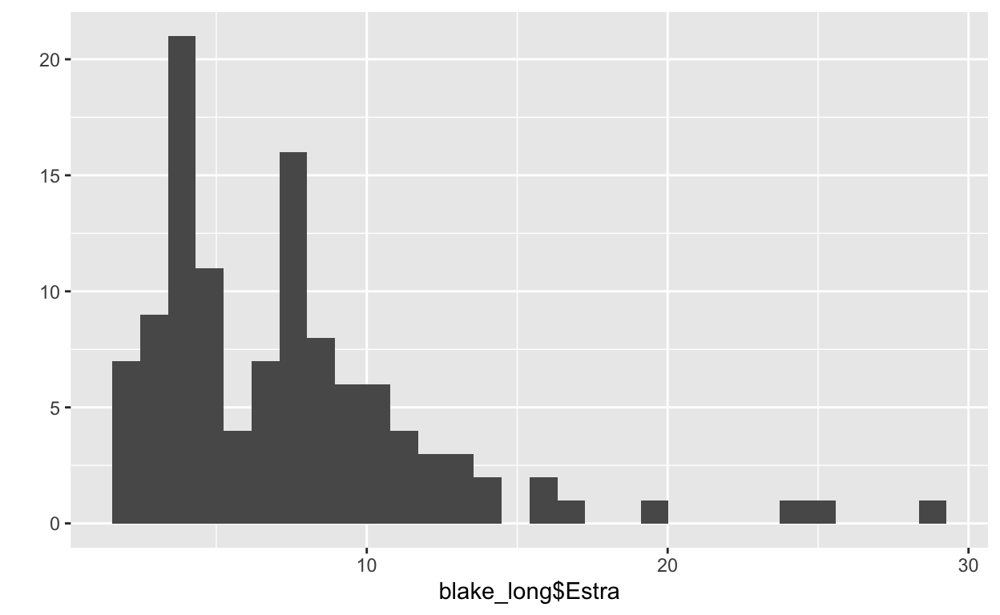
qplot(blake_long$Prog)`stat_bin()` using `bins = 30`. Pick better value `binwidth`.Warning: Removed 6 rows containing non-finite outside the scale range
(`stat_bin()`).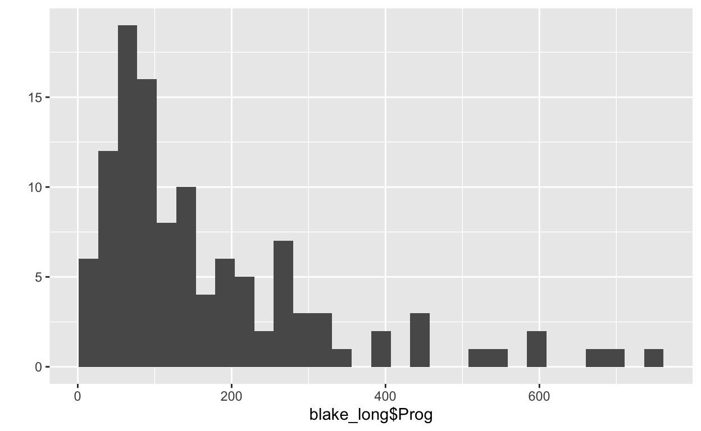
blake_long %>% ungroup() %>%
filter(Fertility == 0, Day <= 15) %>%
summarise(mean(Day), sd(Day), n(), pct = n()/60)ungroup: no grouping variables remain
filter: removed 105 rows (88%), 15 rows remaining
summarise: now one row and 4 columns, ungrouped# A tibble: 1 × 4
`mean(Day)` `sd(Day)` `n()` pct
<dbl> <dbl> <int> <dbl>
1 3.6 2.50 15 0.25blake_long %>% ungroup() %>%
filter(Fertility == 0, Day > 15) %>%
summarise(mean(Day), sd(Day), n(), pct = n()/60)ungroup: no grouping variables remain
filter: removed 75 rows (62%), 45 rows remaining
summarise: now one row and 4 columns, ungrouped# A tibble: 1 × 4
`mean(Day)` `sd(Day)` `n()` pct
<dbl> <dbl> <int> <dbl>
1 25.7 3.22 45 0.75# Forty-seven percent of non-fertile sessions occurred in the early follicular phase (mean cycle day = 4.02, SD = 2.54) and the remain- der occurred in the late luteal phase (mean cycle day=26.06, SD=3.45).
# Most participants completed both fertile and non- fertile sessions in the same menstrual cycle (63.5%), the remainder attended sessions occurring 1, 2, or 3 cycles apart.
1-table(blake_long$cycle_no)[2]/60 2
0.5666667 # Once a positive LH surge was detected, 85.4% of participants attended their fertile session within one day, the remaining 14.6% attended this session within two days.
prop.table(table(blake_long$DaysAfterPeak <= 1))
FALSE TRUE
0.08333333 0.91666667 ggplot(blake_long, aes(Day, lh_day)) + geom_smooth(method = 'lm') + geom_point() + ylim(-15, 15)`geom_smooth()` using formula = 'y ~ x'Warning: Removed 26 rows containing non-finite outside the scale range
(`stat_smooth()`).Warning: Removed 26 rows containing missing values or values outside the scale
range (`geom_point()`).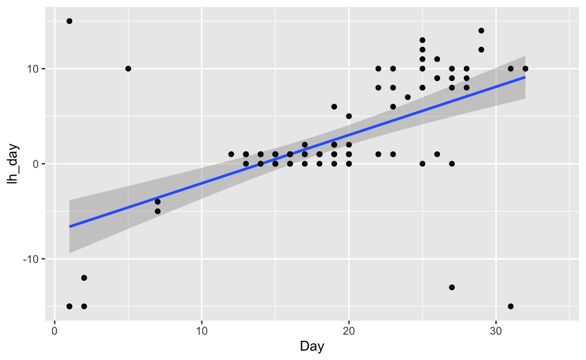
ggplot(blake_long, aes(bc_day, lh_day)) + geom_smooth(method = 'lm') + geom_point() + ylim(-15, 15)`geom_smooth()` using formula = 'y ~ x'Warning: Removed 29 rows containing non-finite outside the scale range
(`stat_smooth()`).Warning: Removed 29 rows containing missing values or values outside the scale
range (`geom_point()`).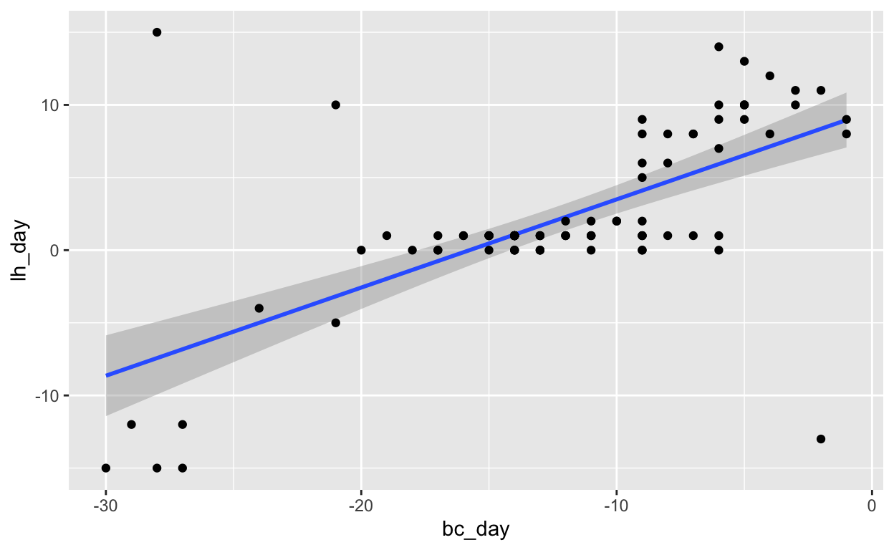
ggplot(blake_long, aes(Day, log(Estra))) + geom_smooth() + geom_point()`geom_smooth()` using method = 'loess' and formula = 'y ~ x'Warning: Removed 6 rows containing non-finite outside the scale range
(`stat_smooth()`).Warning: Removed 6 rows containing missing values or values outside the scale
range (`geom_point()`).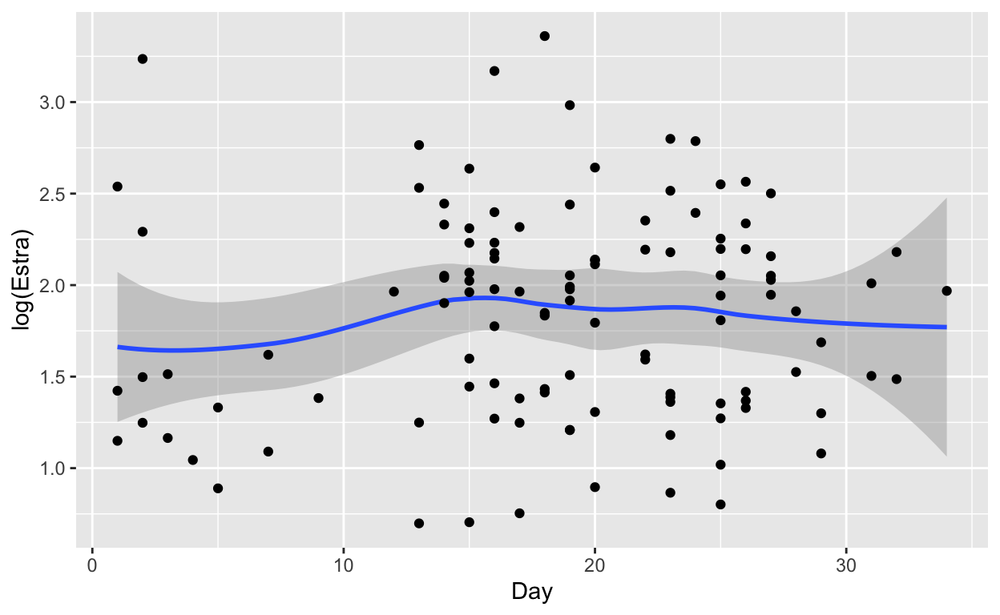
ggplot(blake_long, aes(Day, log(Prog))) + geom_smooth() + geom_point()`geom_smooth()` using method = 'loess' and formula = 'y ~ x'Warning: Removed 6 rows containing non-finite outside the scale range
(`stat_smooth()`).
Removed 6 rows containing missing values or values outside the scale
range (`geom_point()`).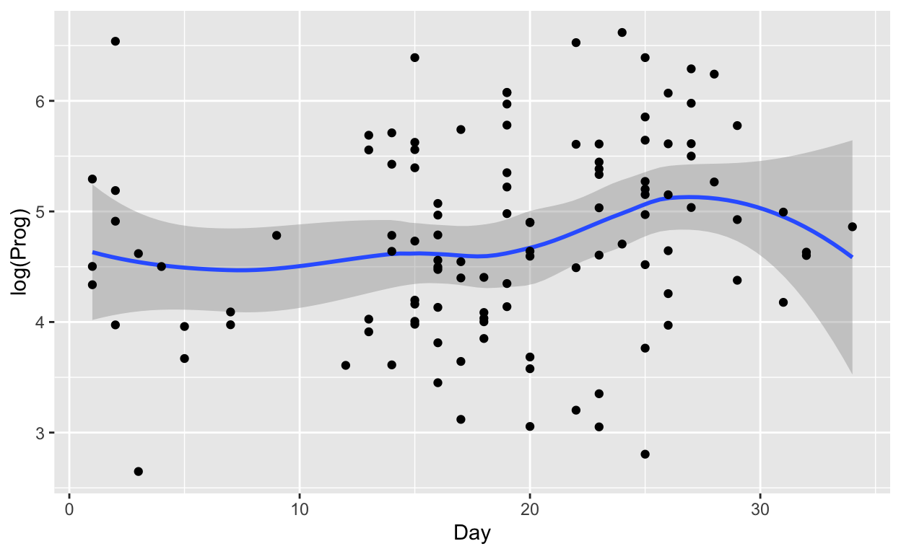
ggplot(blake_long, aes(Day, log(Estra/Prog))) + geom_smooth() + geom_point()`geom_smooth()` using method = 'loess' and formula = 'y ~ x'Warning: Removed 6 rows containing non-finite outside the scale range
(`stat_smooth()`).
Removed 6 rows containing missing values or values outside the scale
range (`geom_point()`).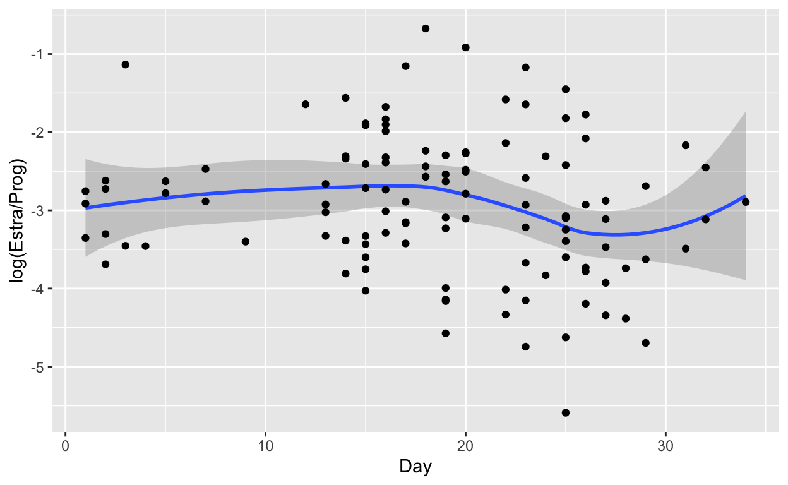
ggplot(blake_long, aes(bc_day, log(Estra))) + geom_smooth() + geom_point()`geom_smooth()` using method = 'loess' and formula = 'y ~ x'Warning: Removed 10 rows containing non-finite outside the scale range
(`stat_smooth()`).Warning: Removed 10 rows containing missing values or values outside the scale
range (`geom_point()`).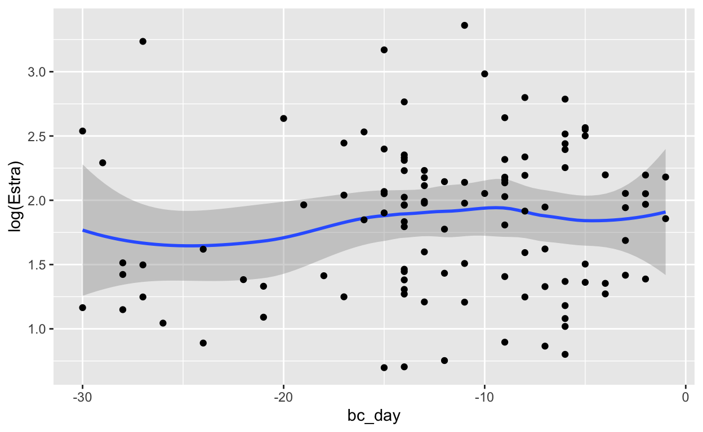
ggplot(blake_long, aes(bc_day, log(Prog))) + geom_smooth() + geom_point()`geom_smooth()` using method = 'loess' and formula = 'y ~ x'Warning: Removed 10 rows containing non-finite outside the scale range
(`stat_smooth()`).
Removed 10 rows containing missing values or values outside the scale
range (`geom_point()`).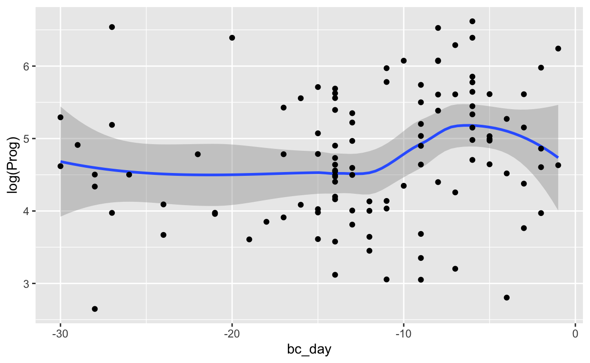
ggplot(blake_long, aes(bc_day, log(Estra/Prog))) + geom_smooth() + geom_point()`geom_smooth()` using method = 'loess' and formula = 'y ~ x'Warning: Removed 10 rows containing non-finite outside the scale range
(`stat_smooth()`).
Removed 10 rows containing missing values or values outside the scale
range (`geom_point()`).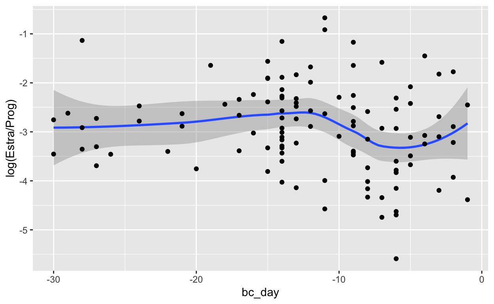
ggplot(blake_long, aes(lh_day, log(Estra))) + geom_smooth() + geom_point() + xlim(-15, 15)`geom_smooth()` using method = 'loess' and formula = 'y ~ x'Warning: Removed 32 rows containing non-finite outside the scale range
(`stat_smooth()`).Warning: Removed 32 rows containing missing values or values outside the scale
range (`geom_point()`).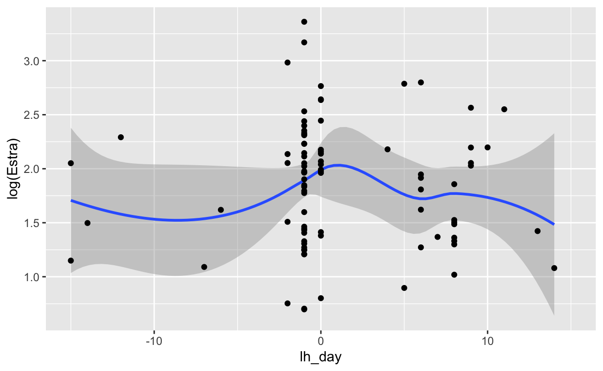
ggplot(blake_long, aes(lh_day, log(Prog))) + geom_smooth() + geom_point() + xlim(-15, 15)`geom_smooth()` using method = 'loess' and formula = 'y ~ x'Warning: Removed 32 rows containing non-finite outside the scale range
(`stat_smooth()`).
Removed 32 rows containing missing values or values outside the scale
range (`geom_point()`).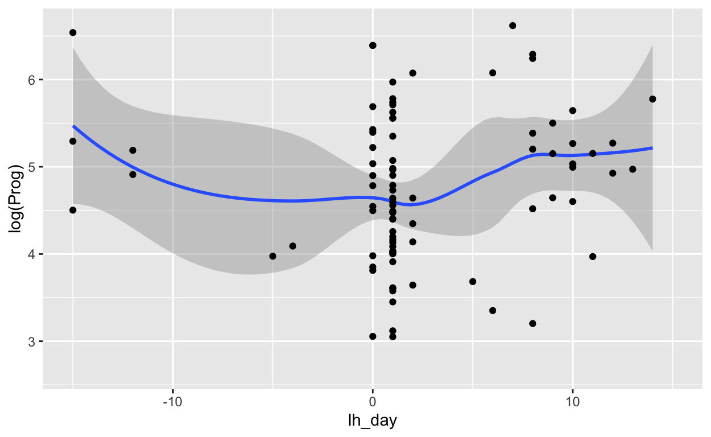
ggplot(blake_long, aes(lh_day, log(Estra/Prog))) + geom_smooth() + geom_point() + xlim(-15, 15)`geom_smooth()` using method = 'loess' and formula = 'y ~ x'Warning: Removed 32 rows containing non-finite outside the scale range
(`stat_smooth()`).
Removed 32 rows containing missing values or values outside the scale
range (`geom_point()`).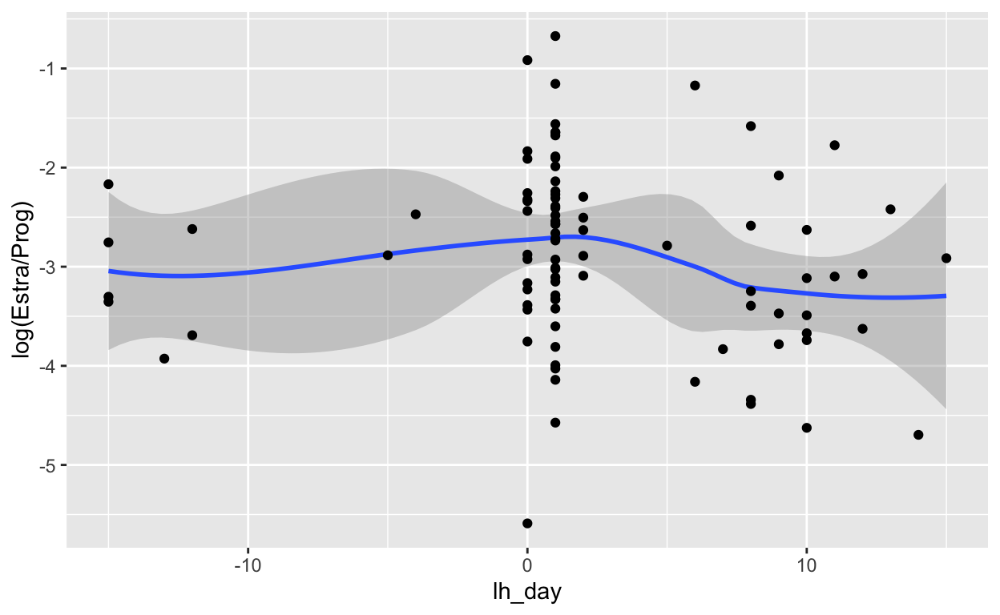
# codebook::label_browser_static(blake)
# codebook::label_browser_static(blake_long)
# blake_long %>% select(SUBJECT, Fertility, FertilityNF, DOPno2, Day, DaysAfterPeak, Session, Estra, Progw) %>% arrange(SUBJECT, Session) %>% filter(SUBJECT < 10)
# blake_long %>% select(SUBJECT, Fertility, FertilityNF, DOPno2, Day, DaysAfterPeak, Session, Estra, Progw) %>% arrange(SUBJECT, Session) %>% filter(SUBJECT == 10)
table(blake_long$bc_day >= -1)
FALSE TRUE
113 3 blake_long <- blake_long %>%
select(id = SUBJECT, cycle = cycle_no, bc_day, fc_day = Day, lh_day, estradiol = Estra, progesterone = Prog, cycle_length = LengthRep, age, partner) %>%
mutate(
fc_day = fc_day - 1) %>% as_tibble()select: renamed 6 variables (id, cycle, fc_day, estradiol, progesterone, …) and dropped 125 variables
mutate: changed 120 values (100%) of 'fc_day' (0 new NAs)range(blake_long$fc_day, na.rm = T)[1] 0 33range(blake_long$bc_day, na.rm = T)[1] -30 -1range(blake_long$lh_day, na.rm = T)[1] -15 14sort(blake_long$estradiol) [1] 2.01000 2.02277 2.12400 2.22900 2.37656 2.43400 2.45033
[8] 2.77000 2.84200 2.94537 2.97600 3.15600 3.20500 3.25700
[15] 3.34510 3.35100 3.48300 3.48300 3.48700 3.56300 3.56800
[22] 3.66800 3.69400 3.77600 3.78581 3.87200 3.90300 3.93000
[29] 3.97800 3.98600 4.00500 4.08200 4.10900 4.12500 4.14900
[36] 4.18900 4.24400 4.32100 4.42100 4.47000 4.49900 4.52000
[43] 4.54200 4.59635 4.91800 4.94600 5.05000 5.05900 5.40500
[50] 5.90200 6.01700 6.09800 6.25600 6.34700 6.40500 6.69800
[57] 6.79200 6.97700 7.00900 7.11000 7.13000 7.13200 7.16000
[64] 7.22300 7.22600 7.32600 7.46200 7.56500 7.60300 7.69000
[71] 7.77700 7.77700 7.79000 7.79400 7.90900 8.28000 8.46400
[78] 8.49500 8.54200 8.65400 8.80900 8.84300 8.85300 8.96900
[85] 8.99100 9.00200 9.30500 9.31600 9.52500 9.89100 10.07900
[92] 10.14900 10.28800 10.35100 10.51300 10.96400 11.00800 11.47400
[99] 11.53400 12.19600 12.37300 12.57400 12.66100 12.81400 12.99800
[106] 13.96200 14.04500 15.88300 16.22900 16.43000 19.75000 23.80500
[113] 25.42600 28.80900sort(blake_long$progesterone) [1] 14.1290 16.5180 21.1450 21.2280 22.6310 24.5970 28.5400
[8] 31.5290 35.7850 36.8900 37.0500 38.2230 39.2440 39.7880
[15] 43.1000 45.2450 47.0300 49.9680 52.4350 53.0240 53.1970
[22] 53.2590 53.5040 54.7210 54.9430 56.0200 56.4709 59.5020
[29] 59.7910 62.3290 62.7200 64.1800 65.2220 66.5210 70.5720
[36] 76.4910 77.3100 79.6400 81.3400 81.7630 87.8060 89.2130
[43] 89.8020 90.1710 90.2660 91.7140 94.2130 95.4410 98.9920
[50] 99.6490 99.9780 101.3700 102.6970 103.4460 103.6470 104.0360
[57] 110.4830 113.5190 119.4690 119.5350 119.9680 129.1940 134.1930
[64] 134.5200 135.8430 137.8400 143.5950 144.2520 145.5360 147.5190
[71] 153.3720 153.7870 159.5130 172.5700 172.8690 179.2520 181.5360
[78] 185.0950 193.7100 194.6510 198.9500 207.2810 210.6460 218.0960
[85] 220.2550 227.4410 231.9730 244.7570 258.8580 259.5140 272.3820
[92] 273.1410 273.5820 273.9274 277.2420 282.6910 295.6580 302.0820
[99] 311.2790 322.5720 323.9560 348.6911 391.9610 394.8400 432.6350
[106] 434.4850 435.6860 513.8120 538.9370 596.5650 596.5650 683.0940
[113] 691.4950 748.7140blake_long <- blake_long %>%
mutate(estradiol_cens = if_else(estradiol <= 2.1, "left", "none"),
estradiol = if_else(estradiol_cens == "left", 2.1, estradiol)
) %>%
mutate(
progesterone_cens = if_else(progesterone <= 8.9, "left", "none"),
progesterone = if_else(progesterone_cens == "left", 8.9, progesterone)
)mutate: changed 2 values (2%) of 'estradiol' (0 new NAs)
new variable 'estradiol_cens' (character) with 3 unique values and 5% NA
mutate: changed 0 values (0%) of 'progesterone' (0 new NAs)
new variable 'progesterone_cens' (character) with 2 unique values and 5% NA is.na(progesterone)
is.na(estradiol) FALSE TRUE
FALSE 114 0
TRUE 0 6saveRDS(blake_long, "blake2017.rds")source("0_summary_functions.R")Loading required package: RcppLoading 'brms' package (version 2.23.0). Useful instructions
can be found by typing help('brms'). A more detailed introduction
to the package is available through vignette('brms_overview').
Attaching package: 'brms'The following object is masked from 'package:stats':
arWarning: package 'gt' was built under R version 4.5.2export_anon("blake2017", blake_long)select: dropped 2 variables (age, partner)ungroup: no grouping variables remain
mutate: converted 'id' from double to factor (0 new NA)blake <- blake_long
df <- blake %>% select(id, cycle, bc_day, fc_day, lh_day, hormone = progesterone, hormone_cens = progesterone_cens, cycle_length, age, partner)select: renamed 2 variables (hormone, hormone_cens) and dropped 2
variablessummarise_hormone(df = df, Dataset = "Blake 2017", Hormone = "Progesterone", Method = "Salivary immunoassay (IBL)",
Citation = "Blake, K. R., Bastian, B., O’Dean, S. M., & Denson, T. F. (2017). High estradiol and low progesterone are associated with high assertiveness in women. Psychoneuroendocrinology, 75, 91–99. http://www.sciencedirect.com/science/article/pii/S0306453016302190",
LOD = 8.9,
CV_intra = "<12",
CV_inter = "<12",
Procedure = "Progesterone and estradiol samples were stored at −20◦C and analyzed by a professional reference laboratory in Dresden, Germany. After thawing, samples were centrifuged at 3000 rpm for five minutes, which resulted in a clear supernatant of low viscosity. Salivary progesterone and estradiol concentrations were measured using commercially available chemiluminescence-immuno-assays with high sensitivity (IBL International, Hamburg, Germany). Intra- and inter-assay coefficients of variations for both hormones were below 12%. ",
Scheduling = "Fertile and non-fertile phase. 'The repeated design of the study required that all participants attended one fertile and one non-fertile laboratory session. Hence, all participants included here detected a LH surge and thus had ovulatory cycles. Forty-seven percent of non-fertile sessions occurred in the early follicular phase (mean cycle day = 4.02, SD = 2.54) and the remain- der occurred in the late luteal phase (mean cycle day=26.06, SD=3.45). Most participants completed both fertile and non- fertile sessions in the same menstrual cycle (63.5%), the remainder attended sessions occurring 1, 2, or 3 cycles apart. Once a positive LH surge was detected, 85.4% of participants attended their fertile session within one day, the remaining 14.6% attended this session within two days. Following a surge in LH, ovulation is expected to occur approximately 24–48 h later (Direito et al., 2013).2'",
LH_test = "To maximize the likelihood of detecting surges in LH, we fol- lowed the standardized LH testing procedure in Blake et al. (2016b). All participants used commercially available urinary LH tests (Blue Cross Bio-Medical Co. LTD, CE/FDA Registered) and tested until a positive surge was detected. Wave 1 participants tested until a positive result was reported (a maximum of 10days) and Wave 2 tested for 11 continuous days, even if a surge was reported ear- lier. We instructed participants to test between 1000 h and 2000 h and report the result to the research team via SMS or email. The repeated design of the study required that all participants attended one fertile and one non-fertile laboratory session. Hence, all participants included here detected a LH surge and thus had ovulatory cycles. Participants who did not record a surge in LH were not eligible for inclusion in the study (see Blake et al., 2016b for full details of the sampling procedure).")select: dropped 8 variables (bc_day, fc_day, lh_day, hormone, hormone_cens, …)
group_by: 2 grouping variables (id, cycle)
summarise: now 86 rows and 3 columns, one group variable remaining (id)
ungroup: no grouping variables remain
select: dropped 9 variables (cycle, bc_day, fc_day, lh_day, hormone, …)
group_by: one grouping variable (id)
summarise: now 60 rows and 2 columns, ungrouped
select: dropped 8 variables (cycle, bc_day, fc_day, lh_day, hormone, …)
group_by: one grouping variable (id)
summarise: now 60 rows and 2 columns, ungrouped
filter: removed 6 rows (5%), 114 rows remaining
group_by: one grouping variable (id)
mutate (grouped): new variable 'hormone_diff' (double) with 113 unique values and 0% NA
new variable 'log_hormone_diff' (double) with 113 unique values and 0% NA
ungroup: no grouping variables remain
Joining with `by = join_by(bc_day)`
left_join: added 26 columns (prc_stirn_bc, prc_wcx_bc, est_estradiol_bc, est_estradiol_bc_se, est_estradiol_bc_low, …)
> rows only in df 4
> rows only in bc_days ( 12)
> matched rows 110
> =====
> rows total 114
left_join: added 26 columns (prc_stirn_fc, prc_wcx_fc, est_estradiol_fc, est_estradiol_fc_se, est_estradiol_fc_low, …)
> rows only in df 0
> rows only in fc_days ( 13)
> matched rows 114
> =====
> rows total 114
group_by: one grouping variable (id)
filter (grouped): no rows removed
summarise: now 58 rows and 2 columns, ungrouped
summarise: now one row and 3 columns, ungrouped
group_by: 2 grouping variables (id, cycle)
filter (grouped): no rows removed
summarise: now 84 rows and 3 columns, one group variable remaining (id)
ungroup: no grouping variables remain
summarise: now one row and 3 columns, ungrouped
left_join: added 22 columns (conception_risk_lh, fertile_lh, est_estradiol_lh, est_estradiol_lh_se, est_estradiol_lh_low, …)
> rows only in x 26
> rows only in lh_days ( 14)
> matched rows 88
> =====
> rows total 114
group_by: one grouping variable (id)
filter (grouped): removed 62 rows (54%), 52 rows remaining (removed 32 groups, 26 groups remaining)
group_by: one grouping variable (id)
filter (grouped): removed 2 rows (2%), 112 rows remaining (removed 2 groups, 56 groups remaining)
Loading required namespace: rstanWarning: Results may not be meaningful for censored models.
Warning: Results may not be meaningful for censored models.Warning: Rows containing NAs were excluded from the model.filter: removed 26 rows (23%), 88 rows remaining
Recomputing 'bayes_R2'Warning: Results may not be meaningful for censored models.Warning: Results may not be meaningful for censored models.Warning in sqrt(r2[, "Estimate"]): NaNs producedWarning in sqrt(r2[, "Q2.5"]): NaNs producedfilter: removed 4 rows (4%), 110 rows remaining
group_by: one grouping variable (id)
filter (grouped): removed 6 rows (5%), 104 rows remaining (removed 6 groups, 52 groups remaining)
mutate (grouped): changed 104 values (100%) of 'x' (0 new NAs)
changed 104 values (100%) of 'y' (0 new NAs)
ungroup: no grouping variables remainWarning: `aes_string()` was deprecated in ggplot2 3.0.0.
ℹ Please use tidy evaluation idioms with `aes()`.
ℹ See also `vignette("ggplot2-in-packages")` for more information.
This warning is displayed once per session.
Call `lifecycle::last_lifecycle_warnings()` to see where this warning
was generated.Recomputing 'bayes_R2'Warning: Results may not be meaningful for censored models.Warning: Results may not be meaningful for censored models.Warning in sqrt(r2[, "Estimate"]): NaNs producedWarning in sqrt(r2[, "Q2.5"]): NaNs producedfilter: no rows removed
group_by: one grouping variable (id)
filter (grouped): removed 2 rows (2%), 112 rows remaining (removed 2 groups, 56 groups remaining)
mutate (grouped): changed 112 values (100%) of 'x' (0 new NAs)
changed 112 values (100%) of 'y' (0 new NAs)
ungroup: no grouping variables remain
Recomputing 'bayes_R2'Warning: Results may not be meaningful for censored models.Warning: Results may not be meaningful for censored models.Warning in sqrt(r2[, "Estimate"]): NaNs producedWarning in sqrt(r2[, "Q2.5"]): NaNs producedfilter: removed 26 rows (23%), 88 rows remaining
group_by: one grouping variable (id)
filter (grouped): removed 28 rows (32%), 60 rows remaining (removed 28 groups, 30 groups remaining)
mutate (grouped): changed 60 values (100%) of 'x' (0 new NAs)
changed 60 values (100%) of 'y' (0 new NAs)
ungroup: no grouping variables remain$Dataset
[1] "Blake 2017"
$Citation
[1] "Blake, K. R., Bastian, B., O’Dean, S. M., & Denson, T. F. (2017). High estradiol and low progesterone are associated with high assertiveness in women. Psychoneuroendocrinology, 75, 91–99. http://www.sciencedirect.com/science/article/pii/S0306453016302190"
$Hormone
[1] "Progesterone"
$Method
[1] "Salivary immunoassay (IBL)"
$`Limit of detection`
[1] 8.9
$LOQ
[1] NA
$`Intraassay CV`
[1] "<12"
$`Interassay CV`
[1] "<12"
$Procedure
[1] "Progesterone and estradiol samples were stored at −20◦C and analyzed by a professional reference laboratory in Dresden, Germany. After thawing, samples were centrifuged at 3000 rpm for five minutes, which resulted in a clear supernatant of low viscosity. Salivary progesterone and estradiol concentrations were measured using commercially available chemiluminescence-immuno-assays with high sensitivity (IBL International, Hamburg, Germany). Intra- and inter-assay coefficients of variations for both hormones were below 12%. "
$Scheduling
[1] "Fertile and non-fertile phase. 'The repeated design of the study required that all participants attended one fertile and one non-fertile laboratory session. Hence, all participants included here detected a LH surge and thus had ovulatory cycles. Forty-seven percent of non-fertile sessions occurred in the early follicular phase (mean cycle day = 4.02, SD = 2.54) and the remain- der occurred in the late luteal phase (mean cycle day=26.06, SD=3.45). Most participants completed both fertile and non- fertile sessions in the same menstrual cycle (63.5%), the remainder attended sessions occurring 1, 2, or 3 cycles apart. Once a positive LH surge was detected, 85.4% of participants attended their fertile session within one day, the remaining 14.6% attended this session within two days. Following a surge in LH, ovulation is expected to occur approximately 24–48 h later (Direito et al., 2013).2'"
$LH_test
[1] "To maximize the likelihood of detecting surges in LH, we fol- lowed the standardized LH testing procedure in Blake et al. (2016b). All participants used commercially available urinary LH tests (Blue Cross Bio-Medical Co. LTD, CE/FDA Registered) and tested until a positive surge was detected. Wave 1 participants tested until a positive result was reported (a maximum of 10days) and Wave 2 tested for 11 continuous days, even if a surge was reported ear- lier. We instructed participants to test between 1000 h and 2000 h and report the result to the research team via SMS or email. The repeated design of the study required that all participants attended one fertile and one non-fertile laboratory session. Hence, all participants included here detected a LH surge and thus had ovulatory cycles. Participants who did not record a surge in LH were not eligible for inclusion in the study (see Blake et al., 2016b for full details of the sampling procedure)."
$distribution`stat_bin()` using `bins = 30`. Pick better value `binwidth`.Warning: Removed 6 rows containing non-finite outside the scale range
(`stat_bin()`).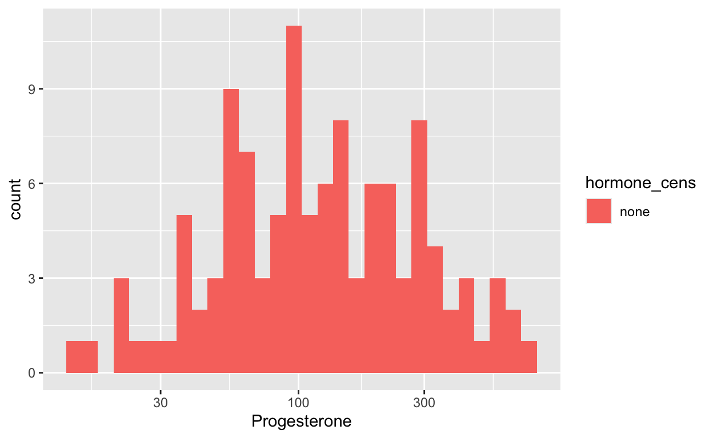
$mean
[1] 170.2247
$logmean
[1] 4.766584
$logsd
[1] 0.8838074
$median
[1] 112.001
$sd
[1] 155.6896
$mad
[1] 91.10651
$range
[1] "14.13, 748.71"
$missing
[1] 6
$outliers
[1] 0
$censored
[1] 0
$n_women
[1] 60
$n_cycles
[1] 86
$n_days
[1] 120
$age
[1] "22.7±4.87"
$in_relationship
[1] "53%"
$cycle_length
[1] "29.2±2.39"
$usable_n
[1] 114
$usable_n_women
[1] 58
$no_lh_surge_woman
[1] "0/58 (0%)"
$no_lh_surge_cycle
[1] "26/84 (31%)"
$var_id_loo
[1] "-0.00 [-0.06;0.04]"
$var_cycle_loo
[1] "-0.03 [-0.08;0.02]"
$var_id
[1] "0.25 [0.01;0.54] (10%)"
$var_cycle
[1] "0.20 [0.01;0.50] (7%)"
$var_resid
[1] "0.83 [0.69;0.98] (84%)"
$bc_day_modelWarning: There were 1 divergent transitions after warmup. Increasing
adapt_delta above 0.99 may help. See
http://mc-stan.org/misc/warnings.html#divergent-transitions-after-warmup Family: gaussian
Links: mu = identity
Formula: log(hormone) | cens(hormone_cens) ~ s(bc_day) + (1 | id) + (1 | id:cycle)
Data: df (Number of observations: 110)
Draws: 4 chains, each with iter = 2000; warmup = 1000; thin = 1;
total post-warmup draws = 4000
Smoothing Spline Hyperparameters:
Estimate Est.Error l-95% CI u-95% CI Rhat Bulk_ESS
sds(sbc_day_1) 1.07 0.96 0.03 3.49 1.00 1330
Tail_ESS
sds(sbc_day_1) 1919
Multilevel Hyperparameters:
~id (Number of levels: 58)
Estimate Est.Error l-95% CI u-95% CI Rhat Bulk_ESS
sd(Intercept) 0.22 0.14 0.01 0.51 1.00 1014
Tail_ESS
sd(Intercept) 1462
~id:cycle (Number of levels: 83)
Estimate Est.Error l-95% CI u-95% CI Rhat Bulk_ESS
sd(Intercept) 0.21 0.14 0.01 0.53 1.00 867
Tail_ESS
sd(Intercept) 1085
Regression Coefficients:
Estimate Est.Error l-95% CI u-95% CI Rhat Bulk_ESS Tail_ESS
Intercept 4.77 0.09 4.59 4.95 1.00 6193 3581
sbc_day_1 0.03 2.59 -6.32 4.41 1.00 2225 1960
Further Distributional Parameters:
Estimate Est.Error l-95% CI u-95% CI Rhat Bulk_ESS Tail_ESS
sigma 0.83 0.07 0.69 0.97 1.00 1940 2636
Draws were sampled using sample(hmc). For each parameter, Bulk_ESS
and Tail_ESS are effective sample size measures, and Rhat is the potential
scale reduction factor on split chains (at convergence, Rhat = 1).
$r_bc
[1] "0.27 [0.08;0.41]"
$rmse_bc
[1] "1.20 [1.04;1.38]"
$r_loo_bc
[1] "NaN [NaN;0.26]"
$r_bc_stirn
[1] "-0.21 [-0.38;-0.02]"
$r_log_bc_stirn
[1] "-0.17 [-0.35; 0.01]"
$r_diff_bc_stirn
[1] "-0.22 [-0.39;-0.03]"
$r_log_diff_bc_stirn
[1] "-0.18 [-0.35; 0.01]"
$r_bc_imputed
[1] " 0.25 [ 0.07; 0.42]"
$r_diff_bc_imputed
[1] " 0.11 [-0.07; 0.30]"
$sd_bc_imputed
[1] "1.15 (83%)"
$r_diff_bc_imputed_rr
[1] " 0.13 [-0.08; 0.32]"
$rr_unrounded
# A tibble: 3 × 4
cycle_phase estimate conf.low conf.high
<chr> <dbl> <dbl> <dbl>
1 bc 0.126 -0.0811 0.322
2 fc 0.0319 -0.202 0.262
3 lh 0.169 -0.155 0.452
$r_within_bc_imputed
[1] " 0.17 [-0.10; 0.42]"
$r_within_bc_imputed_rr
[1] " 0.18 [-0.11; 0.44]"
$rr_within_unrounded
# A tibble: 3 × 4
cycle_phase estimate conf.low conf.high
<chr> <dbl> <dbl> <dbl>
1 bc 0.180 -0.108 0.438
2 fc 0.0529 -0.303 0.393
3 lh 0.281 -0.163 0.621
$imputed_bc_vs_measured_graphWarning: Removed 4 rows containing missing values or values outside the scale
range (`geom_smooth()`).Warning: Removed 4 rows containing missing values or values outside the scale
range (`geom_point()`).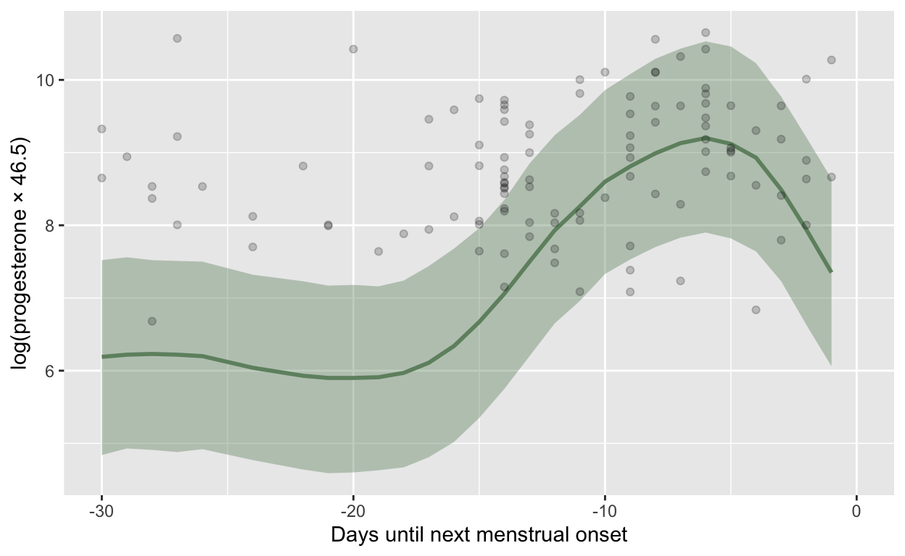
$rmse_bc_imputed
[1] " 1.53"
$fc_day_modelWarning: There were 4 divergent transitions after warmup. Increasing
adapt_delta above 0.99 may help. See
http://mc-stan.org/misc/warnings.html#divergent-transitions-after-warmup Family: gaussian
Links: mu = identity
Formula: log(hormone) | cens(hormone_cens) ~ s(fc_day) + (1 | id) + (1 | id:cycle)
Data: df (Number of observations: 114)
Draws: 4 chains, each with iter = 2000; warmup = 1000; thin = 1;
total post-warmup draws = 4000
Smoothing Spline Hyperparameters:
Estimate Est.Error l-95% CI u-95% CI Rhat Bulk_ESS
sds(sfc_day_1) 1.01 0.92 0.04 3.42 1.00 928
Tail_ESS
sds(sfc_day_1) 1593
Multilevel Hyperparameters:
~id (Number of levels: 58)
Estimate Est.Error l-95% CI u-95% CI Rhat Bulk_ESS
sd(Intercept) 0.24 0.15 0.01 0.53 1.01 574
Tail_ESS
sd(Intercept) 1034
~id:cycle (Number of levels: 84)
Estimate Est.Error l-95% CI u-95% CI Rhat Bulk_ESS
sd(Intercept) 0.21 0.14 0.01 0.53 1.00 678
Tail_ESS
sd(Intercept) 1438
Regression Coefficients:
Estimate Est.Error l-95% CI u-95% CI Rhat Bulk_ESS Tail_ESS
Intercept 4.77 0.09 4.59 4.94 1.00 3998 3152
sfc_day_1 -0.62 2.75 -7.83 3.19 1.00 1470 1408
Further Distributional Parameters:
Estimate Est.Error l-95% CI u-95% CI Rhat Bulk_ESS Tail_ESS
sigma 0.81 0.07 0.67 0.96 1.00 1205 2088
Draws were sampled using sample(hmc). For each parameter, Bulk_ESS
and Tail_ESS are effective sample size measures, and Rhat is the potential
scale reduction factor on split chains (at convergence, Rhat = 1).
$r_fc
[1] "0.26 [0.08;0.40]"
$rmse_fc
[1] "1.18 [1.03;1.36]"
$r_loo_fc
[1] "NaN [NaN;0.25]"
$r_fc_stirn
[1] "-0.13 [-0.31; 0.05]"
$r_log_fc_stirn
[1] "-0.11 [-0.29; 0.07]"
$r_diff_fc_stirn
[1] "-0.09 [-0.27; 0.10]"
$r_log_diff_fc_stirn
[1] "-0.03 [-0.22; 0.15]"
$r_fc_imputed
[1] " 0.20 [ 0.02; 0.37]"
$r_diff_fc_imputed
[1] " 0.02 [-0.16; 0.21]"
$sd_fc_imputed
[1] "0.92 (61%)"
$r_diff_fc_imputed_rr
[1] " 0.03 [-0.20; 0.26]"
$r_within_fc_imputed
[1] " 0.04 [-0.22; 0.30]"
$r_within_fc_imputed_rr
[1] " 0.05 [-0.30; 0.39]"
$imputed_fc_vs_measured_graphWarning: Removed 3 rows containing missing values or values outside the scale
range (`geom_smooth()`).Warning: Removed 3 rows containing missing values or values outside the scale
range (`geom_point()`).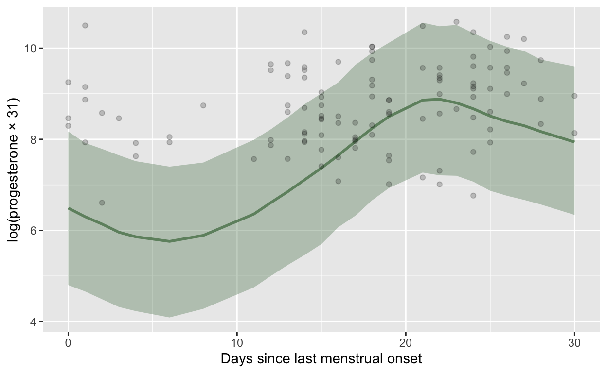
$rmse_fc_imputed
[1] " 1.22"
$lh_day_modelWarning: There were 1 divergent transitions after warmup. Increasing
adapt_delta above 0.99 may help. See
http://mc-stan.org/misc/warnings.html#divergent-transitions-after-warmup Family: gaussian
Links: mu = identity
Formula: log(hormone) | cens(hormone_cens) ~ s(lh_day) + (1 | id) + (1 | id:cycle)
Data: df %>% filter(between(lh_day, -15, 15)) (Number of observations: 88)
Draws: 4 chains, each with iter = 2000; warmup = 1000; thin = 1;
total post-warmup draws = 4000
Smoothing Spline Hyperparameters:
Estimate Est.Error l-95% CI u-95% CI Rhat Bulk_ESS
sds(slh_day_1) 1.17 0.84 0.22 3.45 1.00 1489
Tail_ESS
sds(slh_day_1) 1566
Multilevel Hyperparameters:
~id (Number of levels: 58)
Estimate Est.Error l-95% CI u-95% CI Rhat Bulk_ESS
sd(Intercept) 0.25 0.16 0.01 0.57 1.00 795
Tail_ESS
sd(Intercept) 1524
~id:cycle (Number of levels: 58)
Estimate Est.Error l-95% CI u-95% CI Rhat Bulk_ESS
sd(Intercept) 0.25 0.16 0.01 0.58 1.01 672
Tail_ESS
sd(Intercept) 1508
Regression Coefficients:
Estimate Est.Error l-95% CI u-95% CI Rhat Bulk_ESS Tail_ESS
Intercept 4.78 0.10 4.58 4.99 1.00 3972 2689
slh_day_1 -0.96 2.37 -6.46 2.91 1.00 2169 1685
Further Distributional Parameters:
Estimate Est.Error l-95% CI u-95% CI Rhat Bulk_ESS Tail_ESS
sigma 0.76 0.08 0.61 0.94 1.00 1399 2715
Draws were sampled using sample(hmc). For each parameter, Bulk_ESS
and Tail_ESS are effective sample size measures, and Rhat is the potential
scale reduction factor on split chains (at convergence, Rhat = 1).
$r_lh
[1] "0.31 [0.12;0.46]"
$rmse_lh
[1] "1.13 [0.97;1.34]"
$r_loo_lh
[1] "NaN [NaN;0.21]"
$r_prob_lh
[1] "-0.08 [-0.29; 0.13]"
$r_log_prob_lh
[1] "-0.10 [-0.30; 0.12]"
$r_diff_prob_lh
[1] "-0.15 [-0.35; 0.06]"
$r_log_diff_prob_lh
[1] "-0.16 [-0.35; 0.05]"
$r_lh_imputed
[1] " 0.12 [-0.09; 0.32]"
$r_diff_lh_imputed
[1] " 0.11 [-0.10; 0.31]"
$sd_lh_imputed
[1] "0.87 (42%)"
$r_diff_lh_imputed_rr
[1] " 0.17 [-0.15; 0.45]"
$r_within_lh_imputed
[1] " 0.23 [-0.13; 0.54]"
$r_within_lh_imputed_rr
[1] " 0.28 [-0.16; 0.62]"
$imputed_lh_vs_measured_graphWarning: Removed 26 rows containing missing values or values outside the scale
range (`geom_smooth()`).Warning: Removed 26 rows containing missing values or values outside the scale
range (`geom_point()`).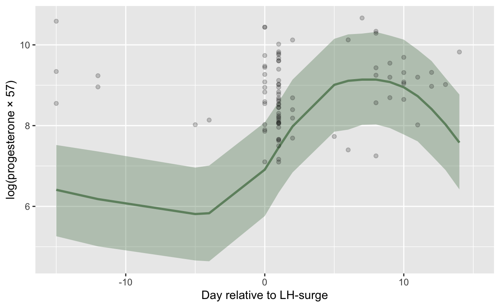
$rmse_lh_imputed
[1] " 1.61"df <- blake %>% select(id, cycle, bc_day, fc_day, lh_day, hormone = estradiol, hormone_cens = estradiol_cens, cycle_length, age, partner)select: renamed 2 variables (hormone, hormone_cens) and dropped 2
variablessummarise_hormone(df = df, Dataset = "Blake 2017", Hormone = "Estradiol", Method = "Salivary immunoassay (IBL)",
Citation = "Blake, K. R., Bastian, B., O’Dean, S. M., & Denson, T. F. (2017). High estradiol and low progesterone are associated with high assertiveness in women. Psychoneuroendocrinology, 75, 91–99. http://www.sciencedirect.com/science/article/pii/S0306453016302190",
LOD = 2.1,
CV_intra = "<12",
CV_inter = "<12",
Procedure = "Progesterone and estradiol samples were stored at −20◦C and analyzed by a professional reference laboratory in Dresden, Germany. After thawing, samples were centrifuged at 3000 rpm for five minutes, which resulted in a clear supernatant of low viscosity. Salivary progesterone and estradiol concentrations were measured using commercially available chemiluminescence-immuno-assays with high sensitivity (IBL International, Hamburg, Germany). Intra- and inter-assay coefficients of variations for both hormones were below 12%. ",
Scheduling = "Fertile and non-fertile phase. 'The repeated design of the study required that all participants attended one fertile and one non-fertile laboratory session. Hence, all participants included here detected a LH surge and thus had ovulatory cycles. Forty-seven percent of non-fertile sessions occurred in the early follicular phase (mean cycle day = 4.02, SD = 2.54) and the remain- der occurred in the late luteal phase (mean cycle day=26.06, SD=3.45). Most participants completed both fertile and non- fertile sessions in the same menstrual cycle (63.5%), the remainder attended sessions occurring 1, 2, or 3 cycles apart. Once a positive LH surge was detected, 85.4% of participants attended their fertile session within one day, the remaining 14.6% attended this session within two days. Following a surge in LH, ovulation is expected to occur approximately 24–48 h later (Direito et al., 2013).2'",
LH_test = "To maximize the likelihood of detecting surges in LH, we fol- lowed the standardized LH testing procedure in Blake et al. (2016b). All participants used commercially available urinary LH tests (Blue Cross Bio-Medical Co. LTD, CE/FDA Registered) and tested until a positive surge was detected. Wave 1 participants tested until a positive result was reported (a maximum of 10days) and Wave 2 tested for 11 continuous days, even if a surge was reported ear- lier. We instructed participants to test between 1000 h and 2000 h and report the result to the research team via SMS or email. The repeated design of the study required that all participants attended one fertile and one non-fertile laboratory session. Hence, all participants included here detected a LH surge and thus had ovulatory cycles. Participants who did not record a surge in LH were not eligible for inclusion in the study (see Blake et al., 2016b for full details of the sampling procedure).")select: dropped 8 variables (bc_day, fc_day, lh_day, hormone, hormone_cens, …)
group_by: 2 grouping variables (id, cycle)
summarise: now 86 rows and 3 columns, one group variable remaining (id)
ungroup: no grouping variables remain
select: dropped 9 variables (cycle, bc_day, fc_day, lh_day, hormone, …)
group_by: one grouping variable (id)
summarise: now 60 rows and 2 columns, ungrouped
select: dropped 8 variables (cycle, bc_day, fc_day, lh_day, hormone, …)
group_by: one grouping variable (id)
summarise: now 60 rows and 2 columns, ungrouped
filter: removed 6 rows (5%), 114 rows remaining
group_by: one grouping variable (id)
mutate (grouped): new variable 'hormone_diff' (double) with 113 unique values and 0% NA
new variable 'log_hormone_diff' (double) with 113 unique values and 0% NA
ungroup: no grouping variables remain
Joining with `by = join_by(bc_day)`
left_join: added 26 columns (prc_stirn_bc, prc_wcx_bc, est_estradiol_bc, est_estradiol_bc_se, est_estradiol_bc_low, …)
> rows only in df 4
> rows only in bc_days ( 12)
> matched rows 110
> =====
> rows total 114
left_join: added 26 columns (prc_stirn_fc, prc_wcx_fc, est_estradiol_fc, est_estradiol_fc_se, est_estradiol_fc_low, …)
> rows only in df 0
> rows only in fc_days ( 13)
> matched rows 114
> =====
> rows total 114
group_by: one grouping variable (id)
filter (grouped): no rows removed
summarise: now 58 rows and 2 columns, ungrouped
summarise: now one row and 3 columns, ungrouped
group_by: 2 grouping variables (id, cycle)
filter (grouped): no rows removed
summarise: now 84 rows and 3 columns, one group variable remaining (id)
ungroup: no grouping variables remain
summarise: now one row and 3 columns, ungrouped
left_join: added 22 columns (conception_risk_lh, fertile_lh, est_estradiol_lh, est_estradiol_lh_se, est_estradiol_lh_low, …)
> rows only in x 26
> rows only in lh_days ( 14)
> matched rows 88
> =====
> rows total 114
group_by: one grouping variable (id)
filter (grouped): removed 62 rows (54%), 52 rows remaining (removed 32 groups, 26 groups remaining)
group_by: one grouping variable (id)
filter (grouped): removed 2 rows (2%), 112 rows remaining (removed 2 groups, 56 groups remaining)Warning: Results may not be meaningful for censored models.Warning: Results may not be meaningful for censored models.Warning: Rows containing NAs were excluded from the model.filter: removed 26 rows (23%), 88 rows remaining
Recomputing 'bayes_R2'Warning: Results may not be meaningful for censored models.Warning: Results may not be meaningful for censored models.Warning in sqrt(r2[, "Estimate"]): NaNs producedWarning in sqrt(r2[, "Q2.5"]): NaNs producedWarning in sqrt(r2[, "Q97.5"]): NaNs producedfilter: removed 4 rows (4%), 110 rows remaining
group_by: one grouping variable (id)
filter (grouped): removed 6 rows (5%), 104 rows remaining (removed 6 groups, 52 groups remaining)
mutate (grouped): changed 104 values (100%) of 'x' (0 new NAs)
changed 104 values (100%) of 'y' (0 new NAs)
ungroup: no grouping variables remain
Recomputing 'bayes_R2'Warning: Results may not be meaningful for censored models.Warning: Results may not be meaningful for censored models.Warning in sqrt(r2[, "Estimate"]): NaNs producedWarning in sqrt(r2[, "Q2.5"]): NaNs producedfilter: no rows removed
group_by: one grouping variable (id)
filter (grouped): removed 2 rows (2%), 112 rows remaining (removed 2 groups, 56 groups remaining)
mutate (grouped): changed 112 values (100%) of 'x' (0 new NAs)
changed 112 values (100%) of 'y' (0 new NAs)
ungroup: no grouping variables remain
Recomputing 'bayes_R2'Warning: Results may not be meaningful for censored models.Warning: Results may not be meaningful for censored models.Warning in sqrt(r2[, "Estimate"]): NaNs producedWarning in sqrt(r2[, "Q2.5"]): NaNs producedWarning in sqrt(r2[, "Q97.5"]): NaNs producedfilter: removed 26 rows (23%), 88 rows remaining
group_by: one grouping variable (id)
filter (grouped): removed 28 rows (32%), 60 rows remaining (removed 28 groups, 30 groups remaining)
mutate (grouped): changed 60 values (100%) of 'x' (0 new NAs)
changed 60 values (100%) of 'y' (0 new NAs)
ungroup: no grouping variables remain$Dataset
[1] "Blake 2017"
$Citation
[1] "Blake, K. R., Bastian, B., O’Dean, S. M., & Denson, T. F. (2017). High estradiol and low progesterone are associated with high assertiveness in women. Psychoneuroendocrinology, 75, 91–99. http://www.sciencedirect.com/science/article/pii/S0306453016302190"
$Hormone
[1] "Estradiol"
$Method
[1] "Salivary immunoassay (IBL)"
$`Limit of detection`
[1] 2.1
$LOQ
[1] NA
$`Intraassay CV`
[1] "<12"
$`Interassay CV`
[1] "<12"
$Procedure
[1] "Progesterone and estradiol samples were stored at −20◦C and analyzed by a professional reference laboratory in Dresden, Germany. After thawing, samples were centrifuged at 3000 rpm for five minutes, which resulted in a clear supernatant of low viscosity. Salivary progesterone and estradiol concentrations were measured using commercially available chemiluminescence-immuno-assays with high sensitivity (IBL International, Hamburg, Germany). Intra- and inter-assay coefficients of variations for both hormones were below 12%. "
$Scheduling
[1] "Fertile and non-fertile phase. 'The repeated design of the study required that all participants attended one fertile and one non-fertile laboratory session. Hence, all participants included here detected a LH surge and thus had ovulatory cycles. Forty-seven percent of non-fertile sessions occurred in the early follicular phase (mean cycle day = 4.02, SD = 2.54) and the remain- der occurred in the late luteal phase (mean cycle day=26.06, SD=3.45). Most participants completed both fertile and non- fertile sessions in the same menstrual cycle (63.5%), the remainder attended sessions occurring 1, 2, or 3 cycles apart. Once a positive LH surge was detected, 85.4% of participants attended their fertile session within one day, the remaining 14.6% attended this session within two days. Following a surge in LH, ovulation is expected to occur approximately 24–48 h later (Direito et al., 2013).2'"
$LH_test
[1] "To maximize the likelihood of detecting surges in LH, we fol- lowed the standardized LH testing procedure in Blake et al. (2016b). All participants used commercially available urinary LH tests (Blue Cross Bio-Medical Co. LTD, CE/FDA Registered) and tested until a positive surge was detected. Wave 1 participants tested until a positive result was reported (a maximum of 10days) and Wave 2 tested for 11 continuous days, even if a surge was reported ear- lier. We instructed participants to test between 1000 h and 2000 h and report the result to the research team via SMS or email. The repeated design of the study required that all participants attended one fertile and one non-fertile laboratory session. Hence, all participants included here detected a LH surge and thus had ovulatory cycles. Participants who did not record a surge in LH were not eligible for inclusion in the study (see Blake et al., 2016b for full details of the sampling procedure)."
$distribution`stat_bin()` using `bins = 30`. Pick better value `binwidth`.Warning: Removed 6 rows containing non-finite outside the scale range
(`stat_bin()`).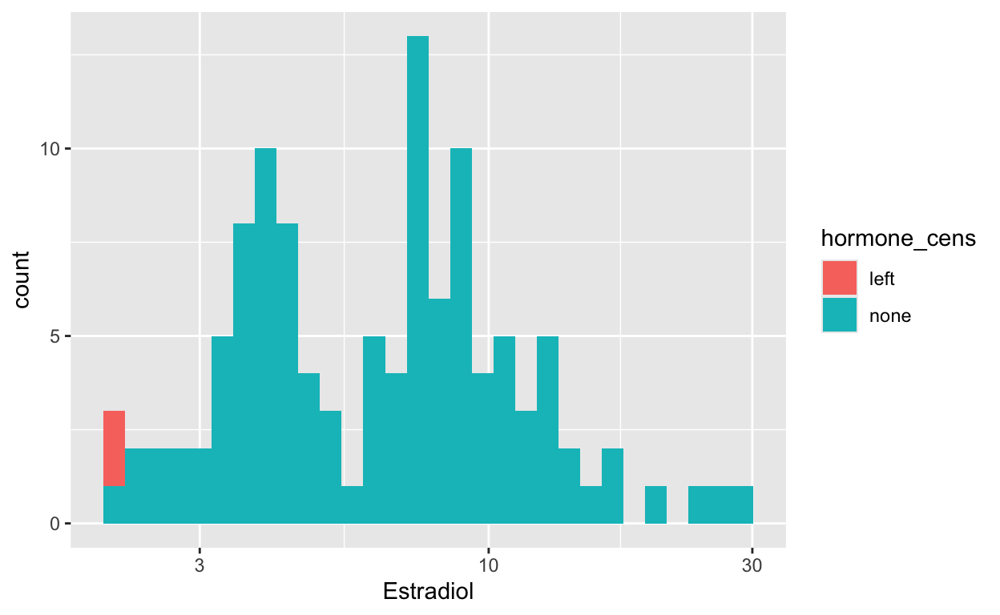
$mean
[1] 7.420329
$logmean
[1] 1.836138
$logsd
[1] 0.5747864
$median
[1] 6.8845
$sd
[1] 4.741387
$mad
[1] 4.134971
$range
[1] "2.10, 28.81"
$missing
[1] 6
$outliers
[1] 0
$censored
[1] 2
$n_women
[1] 60
$n_cycles
[1] 86
$n_days
[1] 120
$age
[1] "22.7±4.87"
$in_relationship
[1] "53%"
$cycle_length
[1] "29.2±2.39"
$usable_n
[1] 114
$usable_n_women
[1] 58
$no_lh_surge_woman
[1] "0/58 (0%)"
$no_lh_surge_cycle
[1] "26/84 (31%)"
$var_id_loo
[1] "-0.03 [-0.06;-0.01]"
$var_cycle_loo
[1] "-0.05 [-0.08;-0.03]"
$var_id
[1] "0.09 [0.00;0.23] (3%)"
$var_cycle
[1] "0.10 [0.00;0.27] (4%)"
$var_resid
[1] "0.58 [0.50;0.67] (92%)"
$bc_day_modelWarning: There were 5 divergent transitions after warmup. Increasing
adapt_delta above 0.99 may help. See
http://mc-stan.org/misc/warnings.html#divergent-transitions-after-warmup Family: gaussian
Links: mu = identity
Formula: log(hormone) | cens(hormone_cens) ~ s(bc_day) + (1 | id) + (1 | id:cycle)
Data: df (Number of observations: 110)
Draws: 4 chains, each with iter = 2000; warmup = 1000; thin = 1;
total post-warmup draws = 4000
Smoothing Spline Hyperparameters:
Estimate Est.Error l-95% CI u-95% CI Rhat Bulk_ESS
sds(sbc_day_1) 0.60 0.63 0.02 2.25 1.00 1242
Tail_ESS
sds(sbc_day_1) 1423
Multilevel Hyperparameters:
~id (Number of levels: 58)
Estimate Est.Error l-95% CI u-95% CI Rhat Bulk_ESS
sd(Intercept) 0.09 0.07 0.00 0.25 1.00 1760
Tail_ESS
sd(Intercept) 2034
~id:cycle (Number of levels: 83)
Estimate Est.Error l-95% CI u-95% CI Rhat Bulk_ESS
sd(Intercept) 0.10 0.08 0.00 0.28 1.00 1236
Tail_ESS
sd(Intercept) 1780
Regression Coefficients:
Estimate Est.Error l-95% CI u-95% CI Rhat Bulk_ESS Tail_ESS
Intercept 1.84 0.06 1.72 1.96 1.00 4242 2910
sbc_day_1 0.05 1.48 -3.50 2.76 1.00 1739 1526
Further Distributional Parameters:
Estimate Est.Error l-95% CI u-95% CI Rhat Bulk_ESS Tail_ESS
sigma 0.58 0.04 0.50 0.67 1.00 2873 3084
Draws were sampled using sample(hmc). For each parameter, Bulk_ESS
and Tail_ESS are effective sample size measures, and Rhat is the potential
scale reduction factor on split chains (at convergence, Rhat = 1).
$r_bc
[1] "0.18 [0.03;0.33]"
$rmse_bc
[1] "0.82 [0.72;0.94]"
$r_loo_bc
[1] "NaN [NaN;NaN]"
$r_bc_stirn
[1] " 0.04 [-0.15; 0.23]"
$r_log_bc_stirn
[1] " 0.07 [-0.12; 0.25]"
$r_diff_bc_stirn
[1] " 0.06 [-0.13; 0.25]"
$r_log_diff_bc_stirn
[1] " 0.07 [-0.11; 0.26]"
$r_bc_imputed
[1] " 0.12 [-0.07; 0.30]"
$r_diff_bc_imputed
[1] " 0.11 [-0.08; 0.29]"
$sd_bc_imputed
[1] "0.53 (71%)"
$r_diff_bc_imputed_rr
[1] " 0.13 [-0.10; 0.34]"
$rr_unrounded
# A tibble: 3 × 4
cycle_phase estimate conf.low conf.high
<chr> <dbl> <dbl> <dbl>
1 bc 0.126 -0.0987 0.336
2 fc 0.157 -0.0518 0.352
3 lh 0.0461 -0.279 0.359
$r_within_bc_imputed
[1] " 0.13 [-0.15; 0.39]"
$r_within_bc_imputed_rr
[1] " 0.14 [-0.15; 0.40]"
$rr_within_unrounded
# A tibble: 3 × 4
cycle_phase estimate conf.low conf.high
<chr> <dbl> <dbl> <dbl>
1 bc 0.135 -0.154 0.402
2 fc 0.165 -0.0922 0.403
3 lh -0.00185 -0.452 0.449
$imputed_bc_vs_measured_graphWarning: Removed 4 rows containing missing values or values outside the scale
range (`geom_smooth()`).Warning: Removed 4 rows containing missing values or values outside the scale
range (`geom_point()`).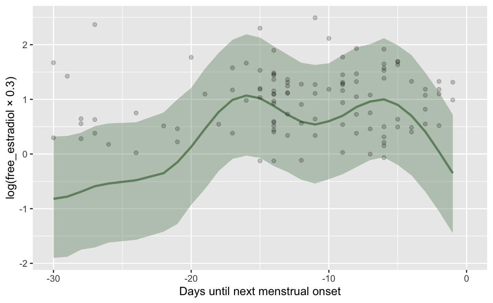
$rmse_bc_imputed
[1] " 0.75"
$fc_day_model
Family: gaussian
Links: mu = identity
Formula: log(hormone) | cens(hormone_cens) ~ s(fc_day) + (1 | id) + (1 | id:cycle)
Data: df (Number of observations: 114)
Draws: 4 chains, each with iter = 2000; warmup = 1000; thin = 1;
total post-warmup draws = 4000
Smoothing Spline Hyperparameters:
Estimate Est.Error l-95% CI u-95% CI Rhat Bulk_ESS
sds(sfc_day_1) 0.67 0.66 0.02 2.51 1.00 1148
Tail_ESS
sds(sfc_day_1) 1559
Multilevel Hyperparameters:
~id (Number of levels: 58)
Estimate Est.Error l-95% CI u-95% CI Rhat Bulk_ESS
sd(Intercept) 0.08 0.06 0.00 0.23 1.00 1764
Tail_ESS
sd(Intercept) 1811
~id:cycle (Number of levels: 84)
Estimate Est.Error l-95% CI u-95% CI Rhat Bulk_ESS
sd(Intercept) 0.10 0.07 0.00 0.26 1.00 1528
Tail_ESS
sd(Intercept) 2011
Regression Coefficients:
Estimate Est.Error l-95% CI u-95% CI Rhat Bulk_ESS Tail_ESS
Intercept 1.83 0.06 1.72 1.94 1.00 5544 2992
sfc_day_1 -0.18 1.54 -4.23 2.52 1.00 1710 1140
Further Distributional Parameters:
Estimate Est.Error l-95% CI u-95% CI Rhat Bulk_ESS Tail_ESS
sigma 0.58 0.04 0.50 0.67 1.00 3909 3197
Draws were sampled using sample(hmc). For each parameter, Bulk_ESS
and Tail_ESS are effective sample size measures, and Rhat is the potential
scale reduction factor on split chains (at convergence, Rhat = 1).
$r_fc
[1] "0.19 [0.03;0.34]"
$rmse_fc
[1] "0.81 [0.71;0.93]"
$r_loo_fc
[1] "NaN [NaN;0.09]"
$r_fc_stirn
[1] " 0.08 [-0.11; 0.26]"
$r_log_fc_stirn
[1] " 0.10 [-0.09; 0.27]"
$r_diff_fc_stirn
[1] " 0.13 [-0.06; 0.30]"
$r_log_diff_fc_stirn
[1] " 0.14 [-0.05; 0.31]"
$r_fc_imputed
[1] " 0.17 [-0.01; 0.34]"
$r_diff_fc_imputed
[1] " 0.14 [-0.05; 0.32]"
$sd_fc_imputed
[1] "0.46 (78%)"
$r_diff_fc_imputed_rr
[1] " 0.16 [-0.05; 0.35]"
$r_within_fc_imputed
[1] " 0.17 [-0.09; 0.41]"
$r_within_fc_imputed_rr
[1] " 0.17 [-0.09; 0.40]"
$imputed_fc_vs_measured_graphWarning: Removed 3 rows containing missing values or values outside the scale
range (`geom_smooth()`).Warning: Removed 3 rows containing missing values or values outside the scale
range (`geom_point()`).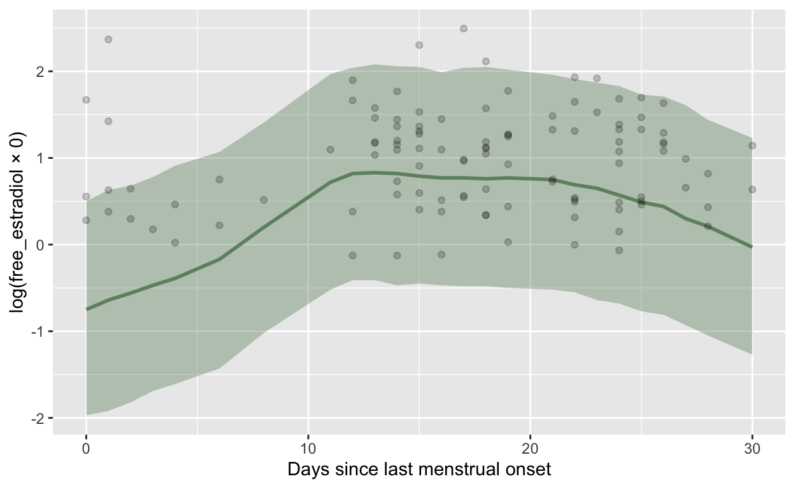
$rmse_fc_imputed
[1] " 0.67"
$lh_day_modelWarning: There were 1 divergent transitions after warmup. Increasing
adapt_delta above 0.99 may help. See
http://mc-stan.org/misc/warnings.html#divergent-transitions-after-warmup Family: gaussian
Links: mu = identity
Formula: log(hormone) | cens(hormone_cens) ~ s(lh_day) + (1 | id) + (1 | id:cycle)
Data: df %>% filter(between(lh_day, -15, 15)) (Number of observations: 88)
Draws: 4 chains, each with iter = 2000; warmup = 1000; thin = 1;
total post-warmup draws = 4000
Smoothing Spline Hyperparameters:
Estimate Est.Error l-95% CI u-95% CI Rhat Bulk_ESS
sds(slh_day_1) 0.47 0.53 0.01 1.93 1.00 1005
Tail_ESS
sds(slh_day_1) 1404
Multilevel Hyperparameters:
~id (Number of levels: 58)
Estimate Est.Error l-95% CI u-95% CI Rhat Bulk_ESS
sd(Intercept) 0.11 0.08 0.00 0.30 1.00 1316
Tail_ESS
sd(Intercept) 1494
~id:cycle (Number of levels: 58)
Estimate Est.Error l-95% CI u-95% CI Rhat Bulk_ESS
sd(Intercept) 0.12 0.08 0.01 0.31 1.00 1277
Tail_ESS
sd(Intercept) 1656
Regression Coefficients:
Estimate Est.Error l-95% CI u-95% CI Rhat Bulk_ESS Tail_ESS
Intercept 1.87 0.07 1.74 2.01 1.00 3944 2464
slh_day_1 -0.72 1.15 -3.68 1.09 1.00 1751 1432
Further Distributional Parameters:
Estimate Est.Error l-95% CI u-95% CI Rhat Bulk_ESS Tail_ESS
sigma 0.59 0.05 0.50 0.70 1.00 2909 2677
Draws were sampled using sample(hmc). For each parameter, Bulk_ESS
and Tail_ESS are effective sample size measures, and Rhat is the potential
scale reduction factor on split chains (at convergence, Rhat = 1).
$r_lh
[1] "0.20 [0.04;0.36]"
$rmse_lh
[1] "0.84 [0.71;0.98]"
$r_loo_lh
[1] "NaN [NaN;NaN]"
$r_prob_lh
[1] " 0.06 [-0.16; 0.26]"
$r_log_prob_lh
[1] " 0.11 [-0.10; 0.31]"
$r_diff_prob_lh
[1] " 0.19 [-0.03; 0.38]"
$r_log_diff_prob_lh
[1] " 0.20 [-0.01; 0.39]"
$r_lh_imputed
[1] " 0.01 [-0.20; 0.22]"
$r_diff_lh_imputed
[1] " 0.03 [-0.18; 0.24]"
$sd_lh_imputed
[1] "0.42 (40%)"
$r_diff_lh_imputed_rr
[1] " 0.05 [-0.28; 0.36]"
$r_within_lh_imputed
[1] "-0.00 [-0.36; 0.35]"
$r_within_lh_imputed_rr
[1] "-0.00 [-0.45; 0.45]"
$imputed_lh_vs_measured_graphWarning: Removed 26 rows containing missing values or values outside the scale
range (`geom_smooth()`).Warning: Removed 26 rows containing missing values or values outside the scale
range (`geom_point()`).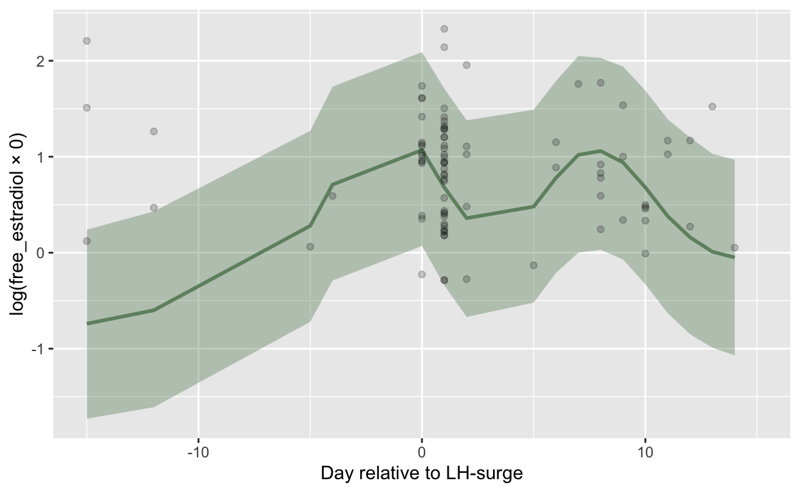
$rmse_lh_imputed
[1] " 0.74"df <- blake %>% select(id, cycle, bc_day, fc_day, lh_day, estradiol, progesterone, cycle_length) %>% mutate(hormone_cens = "none")select: dropped 4 variables (age, partner, estradiol_cens, progesterone_cens)
mutate: new variable 'hormone_cens' (character) with one unique value and 0% NAsummarise_hormones(df = df, Dataset = "Blake 2017", Method = "Salivary immunoassay (IBL)")filter: removed 6 rows (5%), 114 rows remaining
select: dropped 25 variables (prc_wcx_bc, est_estradiol_bc, est_estradiol_bc_se, est_estradiol_bc_low, est_estradiol_bc_high, …)
Joining with `by = join_by(bc_day)`
left_join: added one column (prc_stirn_bc)
> rows only in df 4
> rows only in bc_days ( 12)
> matched rows 110
> =====
> rows total 114
select: dropped 25 variables (prc_wcx_fc, est_estradiol_fc, est_estradiol_fc_se, est_estradiol_fc_low, est_estradiol_fc_high, …)
left_join: added one column (prc_stirn_fc)
> rows only in df 0
> rows only in fc_days ( 13)
> matched rows 114
> =====
> rows total 114
left_join: added 22 columns (conception_risk_lh, fertile_lh, est_estradiol_lh, est_estradiol_lh_se, est_estradiol_lh_low, …)
> rows only in x 26
> rows only in lh_days ( 14)
> matched rows 88
> =====
> rows total 114
group_by: one grouping variable (id)
filter (grouped): removed 62 rows (54%), 52 rows remaining (removed 32 groups, 26 groups remaining)
group_by: one grouping variable (id)
filter (grouped): removed 2 rows (2%), 112 rows remaining (removed 2 groups, 56 groups remaining)Warning: Rows containing NAs were excluded from the model.Warning: Rows containing NAs were excluded from the model.Warning in sqrt(r2[, "Q2.5"]): NaNs producedWarning in sqrt(r2[, "Estimate"]): NaNs producedWarning in sqrt(r2[, "Q2.5"]): NaNs producedWarning in sqrt(r2[, "Estimate"]): NaNs producedWarning in sqrt(r2[, "Q2.5"]): NaNs producedWarning in sqrt(r2[, "Estimate"]): NaNs producedWarning in sqrt(r2[, "Q2.5"]): NaNs producedWarning: Rows containing NAs were excluded from the model.Warning in sqrt(r2[, "Estimate"]): NaNs producedWarning in sqrt(r2[, "Q2.5"]): NaNs producedWarning: Rows containing NAs were excluded from the model.Warning in sqrt(r2[, "Estimate"]): NaNs producedWarning in sqrt(r2[, "Q2.5"]): NaNs produced$Dataset
[1] "Blake 2017"
$Hormone
[1] "Estradiol & Progesterone"
$Method
[1] "Salivary immunoassay (IBL)"
$scatterplotWarning: Removed 6 rows containing missing values or values outside the scale
range (`geom_point()`).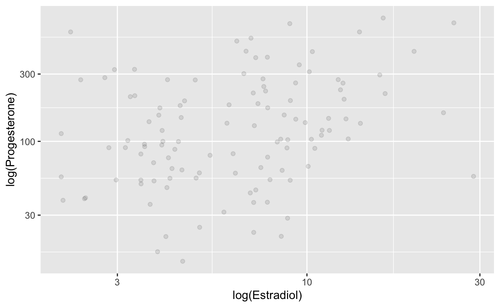
$n_women
[1] 60
$n_cycles
[1] 86
$n_days
[1] 120
$r_ep
[1] " 0.33 [ 0.16; 0.48]"
$r_log_ep
[1] " 0.30 [ 0.12; 0.46]"
$r_e_ratio
[1] " 0.30 [ 0.13; 0.46]"
$r_log_e_ratio
[1] " 0.35 [ 0.17; 0.50]"
$r_p_ratio
[1] "-0.48 [-0.61;-0.33]"
$r_log_p_ratio
[1] "-0.79 [-0.85;-0.71]"
$usable_n
[1] 114
$r_bc_ratio
[1] " 0.10 [-0.09; 0.28]"
$r_bc_log_ratio
[1] " 0.22 [ 0.03; 0.39]"
$m_bc_prob_rat
Family: gaussian
Links: mu = identity
Formula: prc_stirn_bc ~ log(estradiol) + log(ratio)
Data: df (Number of observations: 110)
Draws: 4 chains, each with iter = 2000; warmup = 1000; thin = 1;
total post-warmup draws = 4000
Regression Coefficients:
Estimate Est.Error l-95% CI u-95% CI Rhat Bulk_ESS
Intercept 0.31 0.10 0.12 0.51 1.00 2687
logestradiol -0.00 0.03 -0.07 0.06 1.00 2992
logratio 0.04 0.02 0.00 0.09 1.00 3294
Tail_ESS
Intercept 2334
logestradiol 2267
logratio 2547
Further Distributional Parameters:
Estimate Est.Error l-95% CI u-95% CI Rhat Bulk_ESS Tail_ESS
sigma 0.18 0.01 0.16 0.21 1.00 3594 2329
Draws were sampled using sample(hmc). For each parameter, Bulk_ESS
and Tail_ESS are effective sample size measures, and Rhat is the potential
scale reduction factor on split chains (at convergence, Rhat = 1).
$r_erat_bc
[1] "0.06 [NaN;0.28]"
$m_bc_prob
Family: gaussian
Links: mu = identity
Formula: prc_stirn_bc ~ s(log(estradiol), log(progesterone))
Data: df (Number of observations: 110)
Draws: 4 chains, each with iter = 2000; warmup = 1000; thin = 1;
total post-warmup draws = 4000
Smoothing Spline Hyperparameters:
Estimate Est.Error l-95% CI
sds(slogestradiollogprogesterone_1) 0.10 0.08 0.00
u-95% CI Rhat Bulk_ESS Tail_ESS
sds(slogestradiollogprogesterone_1) 0.29 1.00 1159 1723
Regression Coefficients:
Estimate Est.Error l-95% CI u-95% CI
Intercept 0.18 0.02 0.14 0.21
slogestradiollogprogesterone_1 0.08 0.31 -0.51 0.73
slogestradiollogprogesterone_2 -0.30 0.33 -0.88 0.49
Rhat Bulk_ESS Tail_ESS
Intercept 1.00 5408 2911
slogestradiollogprogesterone_1 1.00 3132 2582
slogestradiollogprogesterone_2 1.00 2472 1971
Further Distributional Parameters:
Estimate Est.Error l-95% CI u-95% CI Rhat Bulk_ESS Tail_ESS
sigma 0.18 0.01 0.16 0.21 1.00 5208 2920
Draws were sampled using sample(hmc). For each parameter, Bulk_ESS
and Tail_ESS are effective sample size measures, and Rhat is the potential
scale reduction factor on split chains (at convergence, Rhat = 1).
$r_loo_bc
[1] "NaN [NaN;0.26]"
$r_fc_ratio
[1] " 0.08 [-0.11; 0.26]"
$r_fc_log_ratio
[1] " 0.17 [-0.02; 0.34]"
$m_fc_prob_rat
Family: gaussian
Links: mu = identity
Formula: prc_stirn_fc ~ log(estradiol) + log(ratio)
Data: df (Number of observations: 114)
Draws: 4 chains, each with iter = 2000; warmup = 1000; thin = 1;
total post-warmup draws = 4000
Regression Coefficients:
Estimate Est.Error l-95% CI u-95% CI Rhat Bulk_ESS
Intercept 0.20 0.09 0.02 0.37 1.00 2500
logestradiol 0.01 0.03 -0.05 0.07 1.00 2808
logratio 0.03 0.02 -0.01 0.07 1.00 2989
Tail_ESS
Intercept 2387
logestradiol 2590
logratio 2814
Further Distributional Parameters:
Estimate Est.Error l-95% CI u-95% CI Rhat Bulk_ESS Tail_ESS
sigma 0.17 0.01 0.15 0.19 1.00 3217 2636
Draws were sampled using sample(hmc). For each parameter, Bulk_ESS
and Tail_ESS are effective sample size measures, and Rhat is the potential
scale reduction factor on split chains (at convergence, Rhat = 1).
$r_erat_fc
[1] "NaN [NaN;0.21]"
$m_fc_prob
Family: gaussian
Links: mu = identity
Formula: prc_stirn_fc ~ s(log(estradiol), log(progesterone))
Data: df (Number of observations: 114)
Draws: 4 chains, each with iter = 2000; warmup = 1000; thin = 1;
total post-warmup draws = 4000
Smoothing Spline Hyperparameters:
Estimate Est.Error l-95% CI
sds(slogestradiollogprogesterone_1) 0.11 0.08 0.00
u-95% CI Rhat Bulk_ESS Tail_ESS
sds(slogestradiollogprogesterone_1) 0.29 1.00 964 1749
Regression Coefficients:
Estimate Est.Error l-95% CI u-95% CI
Intercept 0.14 0.02 0.11 0.17
slogestradiollogprogesterone_1 0.12 0.28 -0.52 0.62
slogestradiollogprogesterone_2 -0.17 0.31 -0.73 0.54
Rhat Bulk_ESS Tail_ESS
Intercept 1.00 8230 2653
slogestradiollogprogesterone_1 1.00 2048 1846
slogestradiollogprogesterone_2 1.00 2953 2288
Further Distributional Parameters:
Estimate Est.Error l-95% CI u-95% CI Rhat Bulk_ESS Tail_ESS
sigma 0.16 0.01 0.14 0.19 1.00 4178 2827
Draws were sampled using sample(hmc). For each parameter, Bulk_ESS
and Tail_ESS are effective sample size measures, and Rhat is the potential
scale reduction factor on split chains (at convergence, Rhat = 1).
$r_loo_fc
[1] "NaN [NaN;0.21]"
$r_lh_ratio
[1] " 0.15 [-0.06; 0.35]"
$r_lh_log_ratio
[1] " 0.16 [-0.05; 0.36]"
$m_lh_prob_rat
Family: gaussian
Links: mu = identity
Formula: fertile_lh ~ log(estradiol) + log(ratio)
Data: df (Number of observations: 88)
Draws: 4 chains, each with iter = 2000; warmup = 1000; thin = 1;
total post-warmup draws = 4000
Regression Coefficients:
Estimate Est.Error l-95% CI u-95% CI Rhat Bulk_ESS
Intercept 0.35 0.18 0.00 0.70 1.00 2544
logestradiol 0.02 0.06 -0.08 0.14 1.00 3085
logratio 0.04 0.04 -0.03 0.11 1.00 2870
Tail_ESS
Intercept 2049
logestradiol 2577
logratio 2246
Further Distributional Parameters:
Estimate Est.Error l-95% CI u-95% CI Rhat Bulk_ESS Tail_ESS
sigma 0.27 0.02 0.23 0.32 1.00 3188 2798
Draws were sampled using sample(hmc). For each parameter, Bulk_ESS
and Tail_ESS are effective sample size measures, and Rhat is the potential
scale reduction factor on split chains (at convergence, Rhat = 1).
$r_erat_lh
[1] "NaN [NaN;0.17]"
$m_lh_prob
Family: gaussian
Links: mu = identity
Formula: fertile_lh ~ s(log(estradiol), log(progesterone))
Data: df (Number of observations: 88)
Draws: 4 chains, each with iter = 2000; warmup = 1000; thin = 1;
total post-warmup draws = 4000
Smoothing Spline Hyperparameters:
Estimate Est.Error l-95% CI
sds(slogestradiollogprogesterone_1) 0.11 0.09 0.00
u-95% CI Rhat Bulk_ESS Tail_ESS
sds(slogestradiollogprogesterone_1) 0.33 1.00 1478 2003
Regression Coefficients:
Estimate Est.Error l-95% CI u-95% CI
Intercept 0.27 0.03 0.22 0.33
slogestradiollogprogesterone_1 0.01 0.40 -0.87 0.71
slogestradiollogprogesterone_2 -0.24 0.39 -0.91 0.69
Rhat Bulk_ESS Tail_ESS
Intercept 1.00 6473 2898
slogestradiollogprogesterone_1 1.00 3306 2190
slogestradiollogprogesterone_2 1.00 2475 2028
Further Distributional Parameters:
Estimate Est.Error l-95% CI u-95% CI Rhat Bulk_ESS Tail_ESS
sigma 0.27 0.02 0.23 0.32 1.00 5055 3076
Draws were sampled using sample(hmc). For each parameter, Bulk_ESS
and Tail_ESS are effective sample size measures, and Rhat is the potential
scale reduction factor on split chains (at convergence, Rhat = 1).
$r_loo_lh
[1] "NaN [NaN;0.07]"